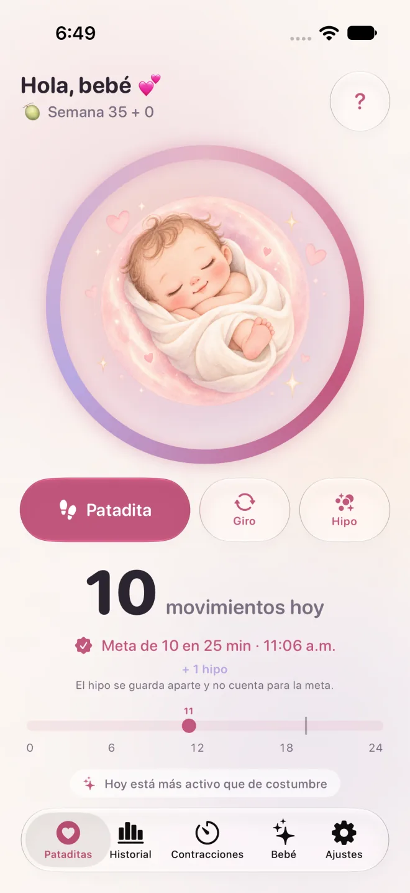

Un toque y listo
Un toque cada vez que tu bebé se mueve. Nada que iniciar, nada que detener.
Toca la pantalla cada vez que tu bebé se mueva. Pataditas agrupa los movimientos por ti y te avisa con cariño cuando llegas a 10 en 2 horas. Sin cronómetros, sin sesiones y sin crear una cuenta. Registra desde tu iPhone o desde tu Apple Watch.
Descárgala en la App Store¿Cuántas patadas son normales y cuándo llamar? →
Conoce cómo funciona Pataditas →
iPhone y Apple Watch · iOS 26 y watchOS 26 o posterior · 11 idiomas

La mayoría de los contadores de patadas te piden darle “iniciar”, vigilar el reloj y luego darle “detener”. Pero los bebés no se mueven con horario, y tú no tienes que andar con el teléfono como si fuera un cronómetro.
En Pataditas solo tocas cuando sientes una patadita o un giro. La app agrupa tus toques sola y se da cuenta cuando llegas a 10 movimientos en 2 horas; entonces lo celebra contigo, con suavidad.
Menos botones, menos presión y más tiempo para disfrutar esos piecitos.

Toca Registrar movimiento para guardar una patada o un giro. No hay una sesión que iniciar ni terminar. El hipo se puede registrar por separado.

Herramientas amables para la segunda mitad de tu embarazo, pensadas para sentirse como una respiración profunda.
Un toque cada vez que tu bebé se mueve. Nada que iniciar, nada que detener.
Elige lo que sentiste. El hipo se guarda en tu historial, pero no cuenta para los 10.
Pataditas detecta 10 movimientos en 2 horas y lo celebra con una animación suave.
Mira todo tu día de un vistazo, con el historial de los días anteriores.
Compara los movimientos que registraste hoy con tus días anteriores. Omitir registros puede cambiar la comparación; no es una evaluación médica.
Hora del día más activa, tendencias y días de la semana. Forma parte de Pataditas Plus.
Lleva un resumen claro a tu próxima cita. Forma parte de Pataditas Plus.
Mide tus contracciones y recibe una alerta cuando llegues al patrón 5-1-1.
Sigue tu semana de embarazo y mira qué tan grande está tu bebé.
Widgets en la pantalla de inicio y de bloqueo, Centro de control, Siri y el botón de acción.
Registra movimientos desde tu muñeca, con complicaciones en la carátula para entrar rápido.
Un aviso suave a la hora que elijas, para tomarte un momento tranquilo con tu bebé.
Niño, niña o sorpresa: arte personalizado pintado en acuarela suave.
Después de siete días de registros, compara los movimientos de hoy con tus registros anteriores. Los movimientos que no anotes pueden cambiar la comparación; no es una evaluación médica.
¿Te preguntas cuántos movimientos son normales? Lee cómo abordan el conteo el NHS y Count the Kicks →

Pataditas incluye una app complementaria para Apple Watch (watchOS 26 o posterior). Toca la pantalla del reloj cada vez que sientas un movimiento y agrega Pataditas a la carátula o al Smart Stack para entrar rápido. Los registros se sincronizan con la app del iPhone mediante tu iCloud privado.
La app del Watch funciona junto con la app del iPhone, que descargas en la App Store.
Elige niño, niña o sorpresa y toda la app se pinta a juego.


Tu embarazo es solo tuyo.
Abre la app y empieza. Nunca te pedimos correo, nombre ni teléfono.
No hay publicidad ni SDK de rastreo. Las estadísticas anónimas son opcionales.
Todo se guarda en tu iPhone y en tu propio iCloud privado (CloudKit). La persona desarrolladora no puede verlo.
Los pagos los gestiona Apple por completo. Nunca vemos tus datos de pago.
Registra movimientos, mira tu línea del tiempo y recibe tu celebración de 10 en 2 horas sin costo. Mejora solo si quieres un análisis más profundo.
Siempre gratis
Pago único · Recomendado
7 días de prueba gratis · cancela cuando quieras
Precios para México en MXN; la App Store muestra el precio de tu país. El Pase de embarazo es un pago único, sin renovaciones. Plus mensual se renueva automáticamente a menos que lo canceles al menos 24 horas antes de que termine el periodo. Cancela cuando quieras en los Ajustes de tu iPhone.
Respuestas rápidas sobre lo que dicen el NHS y Count the Kicks, y sobre Pataditas. Información general, no consejo médico.
Count the Kicks sugiere elegir un momento del día en que tu bebé suele estar activo, sentarte con los pies en alto o recostarte de lado, y anotar cada movimiento hasta llegar a 10. Con Pataditas solo tocas cuando sientes una patada, un giro o un meneo; no hay nada que iniciar ni detener, y la app lleva la cuenta y la hora por ti. El NHS indica que no es necesario contar, así que pregunta a tu médico o partera qué método te recomiendan.
No hay un número normal único. El NHS indica que no existe un número fijo de movimientos que debas sentir cada día; lo importante es conocer el patrón habitual de tu bebé. Count the Kicks, en cambio, propone medir cuánto tardas en sentir 10 movimientos, más o menos a la misma hora cada día, a partir de la semana 28. Hagas lo que hagas, contacta de inmediato a tu médico, partera o unidad de maternidad si el patrón cambia.
La mayoría siente los primeros movimientos entre las semanas 16 y 24 (NHS); en un primer embarazo puede ser después de la semana 20. Count the Kicks propone empezar el conteo diario en la semana 28, o en la 26 si el embarazo es de mayor riesgo o esperas más de un bebé, mientras que el NHS indica que contar no es obligatorio. Si a la semana 24 todavía no has sentido movimientos, avisa a tu equipo de salud. Pregunta a tu médico o partera qué te recomiendan a ti.
Las recomendaciones sobre contar difieren. Count the Kicks (EE. UU.) propone medir cuánto tardas en sentir 10 movimientos, a partir de la semana 28 (semana 26 si hay mayor riesgo o embarazo múltiple). El NHS (Reino Unido) indica que no hay un número fijo de movimientos y que no es necesario contarlos, pero sí conocer el patrón habitual de tu bebé. Ambos coinciden en lo esencial: si tu bebé se mueve menos de lo habitual, deja de moverse o cambia su patrón, contacta de inmediato a tu médico, partera o unidad de maternidad. El NHS añade que llames incluso en plena noche y que no esperes al día siguiente. Pataditas solo registra lo que tú sientes; pregunta a tu equipo médico qué método te recomienda.
No. Count the Kicks no cuenta el hipo porque lo describe como involuntario. En Pataditas puedes registrar el hipo como un tipo aparte: se guarda en tu historial, pero no cuenta para los 10 movimientos. Si tienes duda sobre si sentiste hipo o un movimiento, pregunta a tu médico o partera.
Pataditas agrupa 10 patadas o giros registrados dentro de dos horas. Es una agrupación propia de la app: no evalúa la salud del bebé ni establece una meta diaria universal. Sigue las indicaciones de tu equipo médico.
Contacta de inmediato a tu médico, partera o unidad de maternidad si los movimientos disminuyen, se detienen o cambian. No esperes a completar una meta ni hasta mañana. El NHS indica llamar de inmediato, incluso en plena noche, y no confiar en aparatos caseros para escuchar el latido. NHS.
Después de siete días de registros, Pataditas muestra cómo se comparan los movimientos que registraste hoy con tus días anteriores. Los registros que falten pueden cambiar la comparación. No mide todos los movimientos, no es una evaluación médica y no puede decir si tu bebé está bien.
Sí. No hay cuenta, ni anuncios, ni rastreo, y las estadísticas anónimas de uso son opcionales y están apagadas salvo que las actives. Tus datos se quedan en tu iPhone y en tu propio iCloud privado (CloudKit). La persona desarrolladora no puede verlos. Lee el aviso de privacidad completo.
Sí, puedes registrar movimientos sin conexión. Si tienes iCloud activado, tus datos se sincronizan de forma privada entre tus dispositivos mediante tu propia cuenta de iCloud, y tus ajustes (como tu nombre y la fecha probable de parto) se sincronizan con el almacenamiento clave-valor de iCloud. Nosotros no vemos ninguno de los dos.
Contar es gratis para siempre. Pataditas Plus agrega análisis de patrones con gráficas y un reporte en PDF para tu doctor. Elige el Pase de embarazo, un pago único de $199 que cubre todo tu embarazo, no tiene renovaciones y se comparte con tu familia, o Plus mensual por $89 al mes con 7 días de prueba gratis. Puedes cancelar la suscripción cuando quieras en los Ajustes de tu iPhone.
Sí. Pataditas tiene una app complementaria para Apple Watch (watchOS 26 o posterior): toca la pantalla del reloj cada vez que sientas un movimiento y agrega Pataditas a la carátula o al Smart Stack. Los registros se sincronizan con la app del iPhone mediante tu iCloud privado. Funciona junto con la app del iPhone, que descargas en la App Store.
Pataditas funciona en iPhone con iOS 26 o posterior y en Apple Watch con watchOS 26 o posterior. Está disponible en 11 idiomas: español, inglés, portugués de Brasil, alemán, francés, italiano, japonés, coreano, chino simplificado, neerlandés y albanés.
Un contador de patadas tranquilo. Solo toca cuando tu bebé se mueva.
Descárgala en la App Store
Información del producto por Kaelux · Actualizada el 21 de octubre de 2026. Las afirmaciones médicas de esta página provienen de las fuentes siguientes (en inglés) y se verificaron por última vez el 21 de octubre de 2026. Es información general, no consejo médico, y no ha sido revisada por un profesional de la salud.